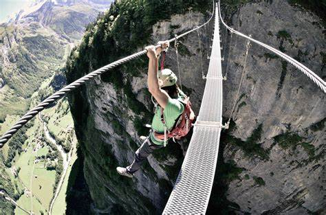
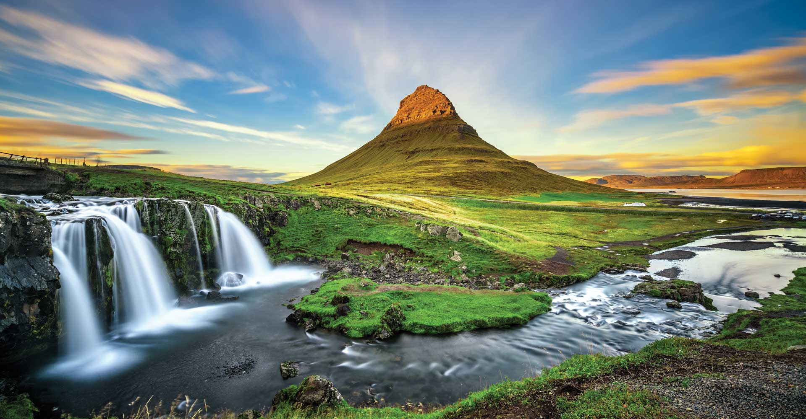

Himachal Pradesh is a heaven for skiing. Particularly Kufri should be mentioned in this regard since it is an ultimate destination for Skiing. It is located at an altitude of 9000 ft. above the sea-level. Mahasu and Narkanda are two very famous skiing destinations. There are two tracks 350 m length for amateur skiers and 800 m long for professional skiers.


Panchgani has derived its name from the five surrounding hills. Panchgani is a famous hill station near Mahabaleshwar. It is a great destination for paragliding because of its picturesque view. Many reliable paragliding clubs are there. You can take a joyride or join courses across levels, starting from elementary to advanced.
It is among the best adventure places in India.
Mussoorie is a quiet and beautiful hill station from the outside but there is another side to it which will boost your adrenaline rush as it is one of the adventure places in India. Head on to the ‘Snow Adventure Zone’ for experiencing the famous skywalk and other thrilling adventure sports like zip-lining and zip swinging. If you want more rugged adventurous activities, then you can go for rock climbing, rappelling, caving or river rafting.
Last but not the least, try free flight over the picturesque views around Mussoorie by going for paragliding. Varkala is one of the most beautiful coastal towns in the Thiruvananthapuram district. It is the only place in Kerala where the hills are close to the sea. The speciality of the place is the merging of hills in the Arabian Sea. Varkala Beach is a famous beach where one can enjoy many water sports activities like parasailing, paragliding and surfing. A lot of water sports operators are there along the beaches, and you can easily participate in a lot of water activities and have fun.